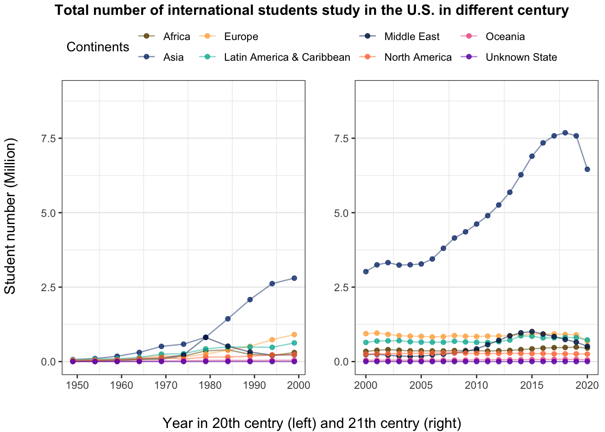
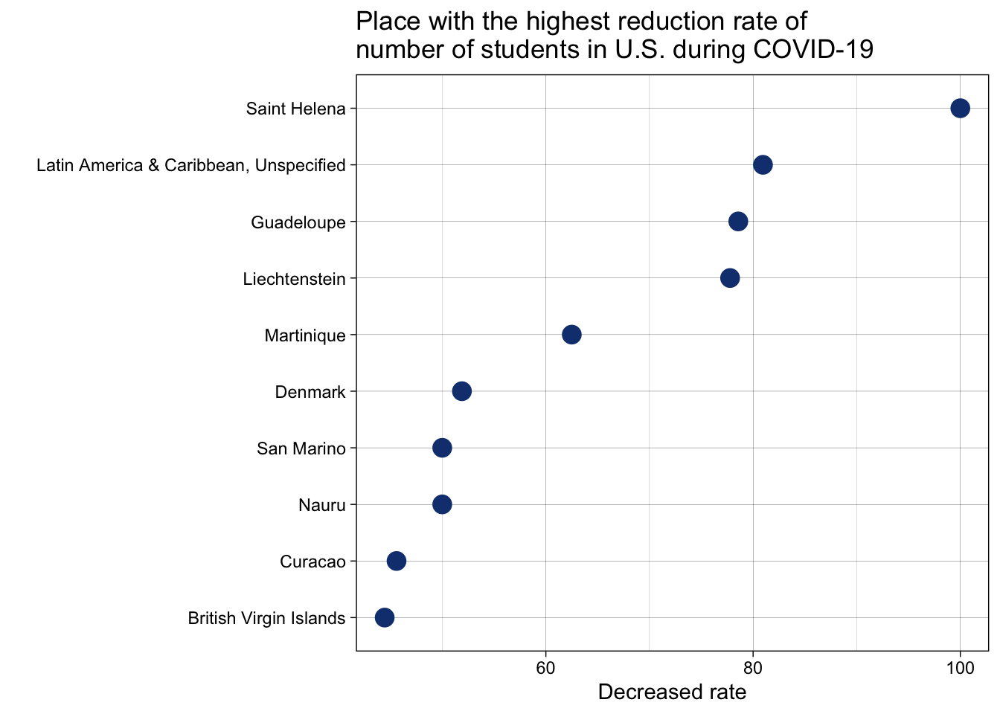
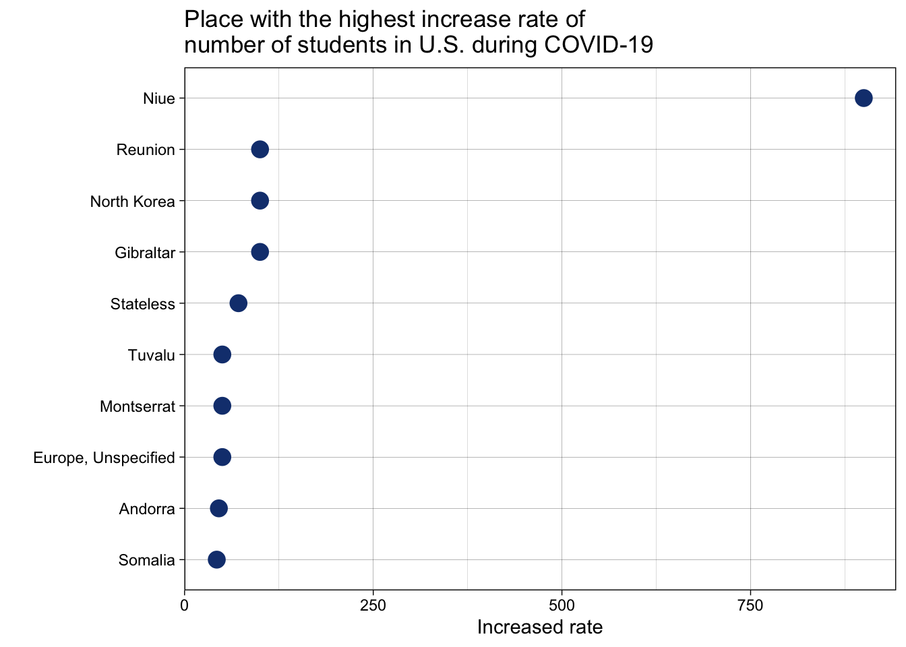
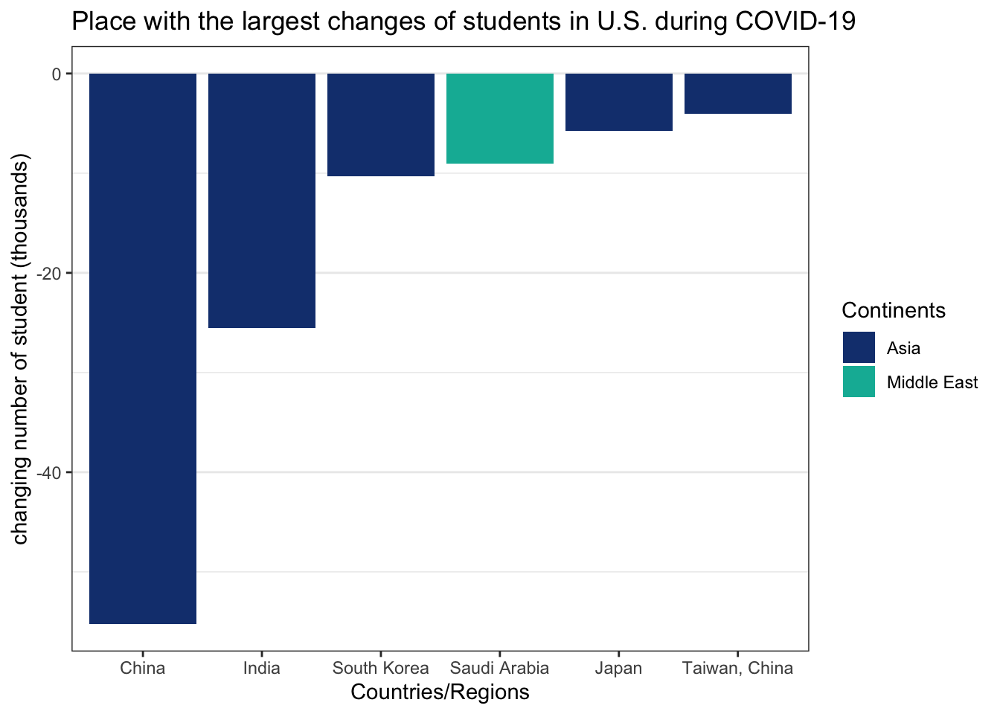

Chapter 5 Results
library(ggplot2)
library(ggpubr)
library(plotly)5.1 What the number of international students and growth trend in 20 century and 21 century
5.1.1 Total number of international students study in the U.S. in different century
tidysum <- df.tidy %>%
select(`Place of Origin`, Continents, Academic_year, student_numbers, century) %>%
group_by(Continents, century) %>%
summarize(.,across(where(is.numeric), ~sum(.x, na.rm = T)/1000000)) %>%
ungroup() %>%
mutate(Continents = replace(Continents,
Continents == "Latin America & Caribbean", "LA&C")) %>%
mutate(Continents = replace(Continents,
Continents == "Middle East", "ME")) %>%
mutate(Continents = replace(Continents,
Continents == "North America", "NorA")) %>%
mutate(Continents = replace(Continents,
Continents == "Unknown State", "Unkwn")) %>%
mutate(Continents = replace(Continents,
Continents == "Oceania", "Ocean"))
ggplot(tidysum, aes(x = Continents, y = student_numbers)) +
geom_col(color = "#142b73", fill = "#153E7E") +
facet_grid(century~.) +
ggtitle("Total number of international students study in the U.S. in different century") +
xlab("Continents") +
ylab("Student number (Million)") +
theme_bw() +
labs(caption = "(LA&C: Latin America & Caribbean, ME: Middle East, NorA: North America, Ocean: Oceania)") +
theme(panel.grid.major.x = element_blank(),
plot.caption = element_text(color = "darkgrey", face = "italic", size = 9,
hjust = 0.5)) 
Based on this graph, we can see that the total number of Asian students studying in the U.S. was the first in both the 20th and 21st centuries. After entering the 21st century, it has even opened up a huge gap with other regions. Also, Africa, Europe, Latin America and the Caribbean have also seen a significant increase in the total number of students in the 21st century.
5.1.2 trend of international students study in the U.S. in different century
colorsets <- c("#684b00","#153E7E","#ffb14e","#00b6a4","#001b4b","#ff7c43",
"#ea5f94","#6b00b9","#ff182f","#0000ff","#ff6ce8","#d89092")
draw.totalnum <- function(c){
tidytotal.num <- df.tidy %>%
select(`Place of Origin`, Continents, Academic_year, student_numbers, century) %>%
filter(century == c) %>%
group_by(Continents, Academic_year, century) %>%
summarize(.,across(where(is.numeric), ~sum(.x, na.rm = T))/100000) %>%
ungroup()
ggplot(tidytotal.num, aes(as.numeric(substr(Academic_year, 1,4)),
student_numbers, col = Continents)) +
geom_line(alpha = 0.5) +
geom_point(alpha = 0.8) +
xlab("")+ ylab("")+
ylim(0,9) +
theme_bw() +
theme(panel.grid.major.x = element_blank(),
plot.caption = element_text(color = "grey", face = "italic", size = 9,
hjust = 0.5)) +
scale_color_manual(values = colorsets)
}
p20 <- draw.totalnum("20th century")
p21 <- draw.totalnum("21th century")
pt <- ggarrange(p20, p21, ncol=2, nrow=1, common.legend = TRUE, legend="top")
annotate_figure(pt,
top = text_grob("Total number of international students study in the U.S. in different century",
face = "bold", size = 12),
left = "Student number (Million)",
bottom = "Year in 20th centry (left) and 21th centry (right)")
From this graph, it is not difficult to see that over time, the number of international students in the United States increased in all regions until the 2019/20 school year saw a decline. The most obvious are Asian students. Combined with the actual social background, we believe that during the epidemic of the COVID-19, the changes in this data are related to the epidemic prevention policy in Asia.
5.1.3 The largest increase in the total number of students per country/region in two centuries on the continent
tidysum.asia <- df.tidy %>%
select(`Place of Origin`, Continents, Academic_year, student_numbers, century) %>%
filter(Continents == "Asia") %>%
group_by(`Place of Origin`, century) %>%
summarize(.,across(where(is.numeric), ~mean(.x, na.rm = T)/1000)) %>%
ungroup()
top5.asia <- tidysum.asia %>%
group_by(`Place of Origin`) %>%
summarise(total_num = sum(student_numbers)) %>%
slice_max(total_num, n = 16) %>%
select(`Place of Origin`)
p.top16 <- tidysum.asia %>%
filter(`Place of Origin` %in% top5.asia$`Place of Origin`) %>%
ggplot(aes(x = student_numbers,
y = fct_reorder2(`Place of Origin`, century == "21th century", student_numbers,
.desc = FALSE), color = century)) +
geom_line(aes(group = `Place of Origin`), alpha = 0.6, color = "black") +
geom_point(size = 2) +
labs(title = "Top 16 countries/region with students in U.S.") +
xlab("")+ ylab("")+
xlim(0,200)+
theme_linedraw() +
scale_color_manual(values = colorsets[c(4,2)])
p.other <- tidysum.asia %>%
filter(!(`Place of Origin` %in% top5.asia$`Place of Origin`)) %>%
ggplot(aes(x = student_numbers,
y = fct_reorder2(`Place of Origin`, century == "21th century", student_numbers,
.desc = FALSE), color = century)) +
geom_line(aes(group = `Place of Origin`), alpha = 0.6, color = "black") +
geom_point(size = 2) +
labs(title = "Countries/region with a few students in U.S.") +
xlab("Student numbers (thousands)")+ ylab("")+
xlim(0,2)+
theme_linedraw() +
scale_color_manual(values = colorsets[c(4,2)])
pt2 <- ggarrange(p.top16, p.other, ncol=1, nrow=2, common.legend = TRUE, legend="top",
align = "v")
annotate_figure(pt2,
top = text_grob("Average number of Asian students study in US in two centuries",
face = "bold", size = 12))
Because the 20th and 21st centuries have different statistical intervals between years, there will be errors in comparing the totals. So here we take the average number of foreign students coming to the United States in each country/region over two centuries to compare. According to this map, we can find that China, India, and South Korea are the main sources of international students in the United States. Also the “Asia, Unspecified” has declined number in the 21st century - as technology has advanced, the accuracy of the statistics has increased.
5.2 What the number of international students in U.S. change during pandemic
df.covid <- df.tidy %>%
filter(Academic_year == "2019/20" | Academic_year == "2020/21")df.covid.csum <- df.covid %>%
group_by(Continents, Academic_year) %>%
summarise(.,across(where(is.numeric), ~sum(.x, na.rm = T)/1000000)) %>%
ungroup()
ggplot(df.covid.csum, aes(x = Academic_year, y = student_numbers*1000, fill = Continents)) +
geom_col() +
ylab("Student numbers (thousands)")+
scale_fill_manual(values = colorsets) +
labs(title = "International students in U.S. during COVID-19 by Continents") +
theme_bw()
The number of international students studying in the United States has dropped by about 200,000 due to the impact of the COVID-19. Among them, students from the Middle East and Eurasia have the most obvious decline.
df.covid.diff <- df %>%
drop_na(c(`2019/20`,`2020/21`)) %>%
mutate(diffs = -`2019/20`+`2020/21`) %>%
mutate(diff_rate = ((-`2019/20`+`2020/21`)/`2019/20`) * 100) %>%
mutate(diff_rate = replace(diff_rate,
is.infinite(diff_rate), NA)) %>%
select(`Place of Origin`, Continents, diffs, diff_rate) %>%
mutate( change = ifelse(diffs < 0, "decrease", "increase"))
g <- ggplot(df.covid.diff, aes(x = diff_rate, y = Continents, color = change)) +
geom_point(alpha = 0.5, size = 2, aes(text = `Place of Origin`)) +
labs(title = "Change rate of student number during COVID-19") +
scale_color_manual(values = colorsets[c(2,7)]) +
theme_bw()ggplotly(g, tooltip = c("x","text"))This cross-tab chart shows that even with the impact of the pendemic, there are countries with positive growth rates of international students study in US. Niue in Oceania has a growth rate of 900%, while the lowest is Saint Helena in Africa with a growth rate of -100%.
df.covid.diff.10 <- df.covid.diff %>%
slice_min(., diff_rate, n = 10)
ggplot(df.covid.diff.10, aes(x = abs(diff_rate), y = fct_reorder(`Place of Origin`, abs(diff_rate)))) +
geom_point(size = 4, color = colorsets[2]) +
labs(title = "Place with the highest reduction rate of
number of students in U.S. during COVID-19") +
ylab("") +
xlab("Decreased rate")+
theme_linedraw()
Further, this chart shows the top 10 countries with negative growth rates, and the overall values for these countries range from -40% to -100%.
df.covid.diff.10max <- df.covid.diff %>%
slice_max(., diff_rate, n = 10)
ggplot(df.covid.diff.10max, aes(x = diff_rate, y = fct_reorder(`Place of Origin`, diff_rate))) +
geom_point(size = 4, color = colorsets[2]) +
labs(title = "Place with the highest increase rate of
number of students in U.S. during COVID-19")+
ylab("") +
xlab("Increased rate")+
theme_linedraw()
Let’s also look at the countries/regions that have maintained positive growth rates during the epidemic.
Comparing the two, we can see that these countries are not the main source of international students in the United States. Most countries/regions have small data bases, so a small change can cause a larger change in the rate.
But the data itself also shows that the U.S., as a major immigration/study country, remains a strong attraction to other countries/regions of the world, large and small, even during the COVID-19 period.
df.covid.change.6 <- df.covid.diff %>%
slice_max(.,abs(diffs)/1000, n = 6)
ggplot(df.covid.change.6 , aes(y = diffs/1000, x = fct_reorder(`Place of Origin`, diffs/1000),
fill = Continents)) +
geom_col() +
labs(title = "Place with the largest changes of students in U.S. during COVID-19")+
xlab("Countries/Regions") +
ylab("changing number of student (thousands)")+
theme_bw()+
theme(panel.grid.major.x = element_blank()) +
scale_fill_manual(values = colorsets[c(2,4)])
This graph shows the top six countries/cities with the largest changes of students in U.S. during COVID-19. All five of these locations are in Asia except for Saudi Arabia, and all of these six are decreased between acedemic year 2019/20 and 2020/21.
5.3 Does the place in top10 of decreased rate and top6 of number changes show decreasing trend before (in 21th century)?
5.3.1 place in top10 of decreased rate
df.1021 <- df.tidy %>%
filter(`Place of Origin` %in% df.covid.diff.10$`Place of Origin`) %>%
filter(century == "21th century")
ggplot(df.1021, aes(as.numeric(substr(Academic_year, 1,4)),
student_numbers, col = `Place of Origin` )) +
geom_line(alpha = 0.5) +
geom_point(alpha = 0.8) +
scale_color_manual(values = colorsets)+
labs(title = "Number of student study in U.S. in 21th century",
subtitle = "for the top10 reduction rate of students in U.S. during COVID-19")+
xlab("Years")+ ylab("Number of student in U.S.")+
theme_bw()
Based on the top 10 place of reduction rate of students in U.S. during COVID-19, we study the changes in the number of international students in the U.S. since the 2000/01 school year.
Among them, Denmark generally showed an upward trend in the 2014/15 school year, and reached its peak in that year, with about 1,600 people, and continued to decline in the following years, and was affected by the epidemic from 2019 to 2020, and plummeted.
The remaining countries/regions have remained relatively stable, staying below 250 since the beginning of the 21st century.
5.3.2 place in top6 of number changes
df.0621 <- df.tidy %>%
filter(`Place of Origin` %in% df.covid.change.6$`Place of Origin`) %>%
filter(century == "21th century")
ggplot(df.0621, aes(as.numeric(substr(Academic_year, 1,4)),
student_numbers/1000, col = `Place of Origin` )) +
geom_line(alpha = 0.5) +
geom_point(alpha = 0.8) +
scale_color_manual(values = colorsets)+
labs(title = "Number of student study in U.S. in 21th century",
subtitle = "for the top6 largest changes of studentsin U.S. during COVID-19") +
xlab("Years")+ ylab("Number of student in U.S. (thousands)")+
theme_bw()
These six countries/cities are the main sources of international students in the United States, but their trends vary.
Both China and India experienced significant growth before the 2019/20 school year and then decreased in numbers, but India’s numbers were already on a downward trend in the 2018/19 school year.
The numbers for South Korea and Taiwan are relatively stable, but South Korea has a larger number in comparison. The number in Japan has been declining slowly since 2000.
As for the only Middle Eastern country, Saudi Arabia showed a growth trend in the decade after 2005. After that, it gradually decreased, and the value of the 2020/21 school year was close to that of Taiwan, China and Japan.